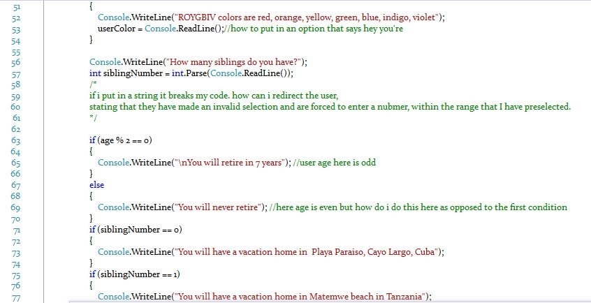
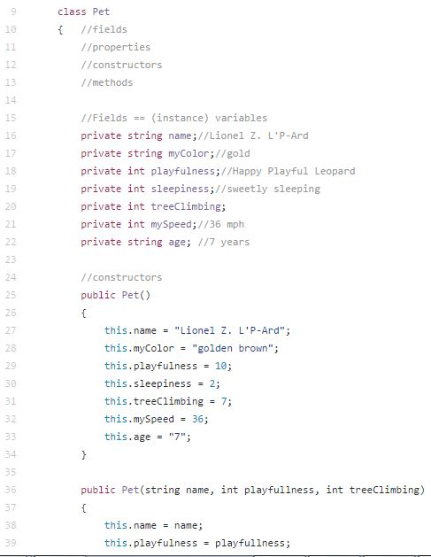
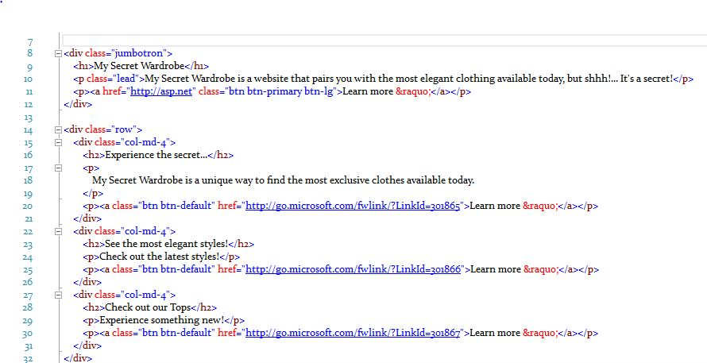

Learn More About My Projects
My Fortune Teller ProjectFor my Fortune Teller Project I learned to code using C# logic and tools to read information inputed by a user, then using that information output the results to the screen. The structure of which can be found within my code.
My Virtual Pet
For my Virtual Pet Project I used C# logic again, also incorporating ascii art to display the final result and output the results to the user.
My Wardrobe Project
For my Wardrobe Project I learned to user text boxes, incorporate css and html, which was a different direction from what I had learned in C#. I was able to add a more engaging layout by incorporating colors and photographs, which had a completely different feel that I enjyoed!
